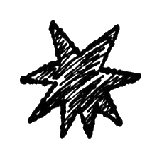

stillhere
a space for presence,
not solutions.
when everything feels heavy, slow down,
breathe, and find a quiet place that feels like yours.
no account needed. write anonymously, or just read. always free.